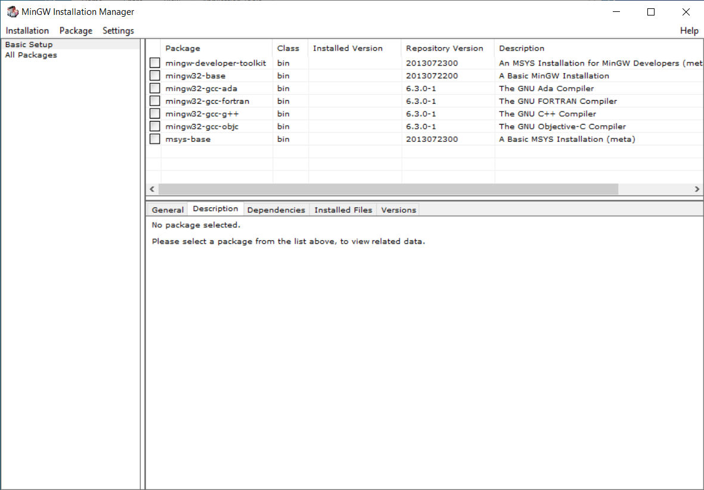
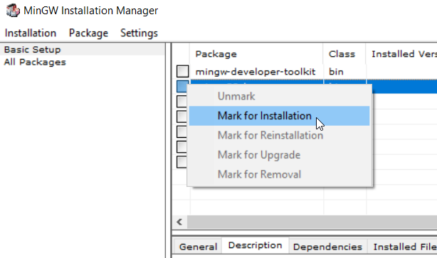
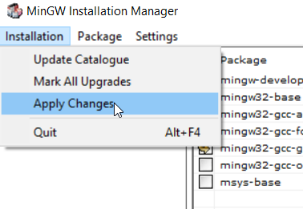
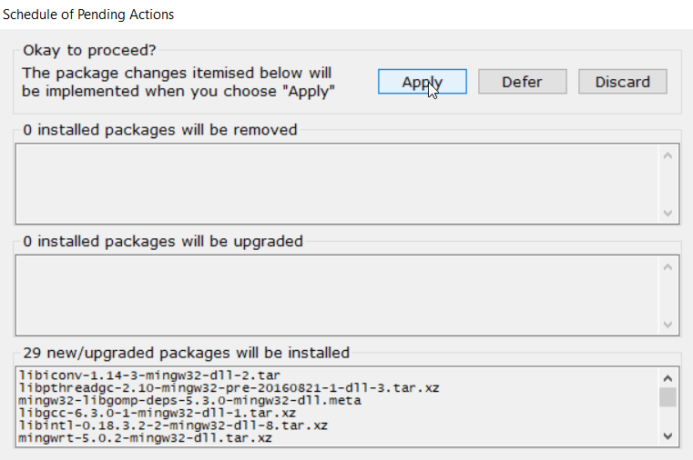
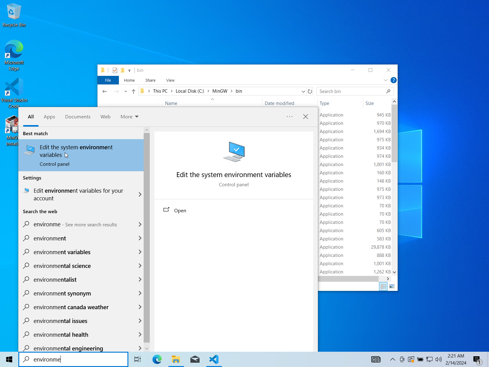
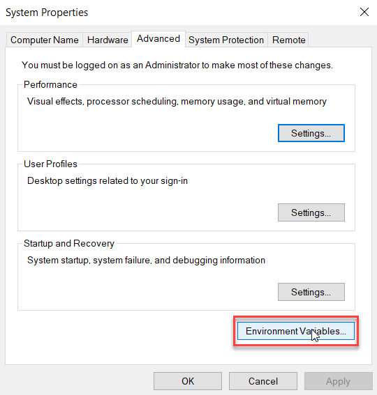
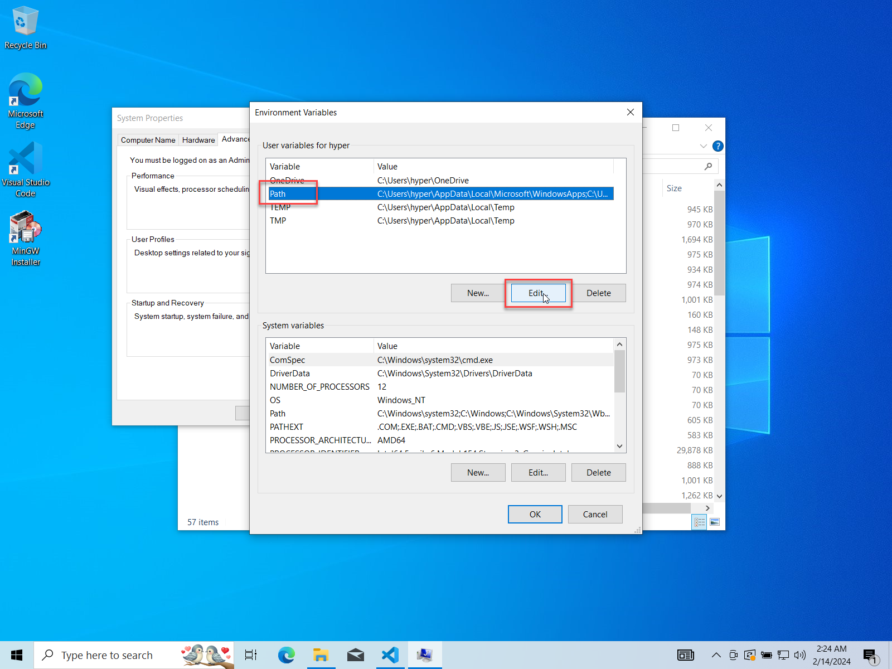
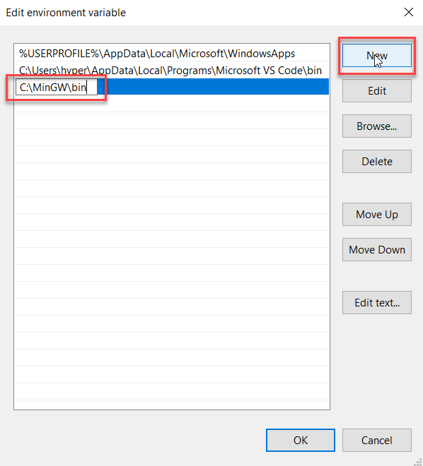
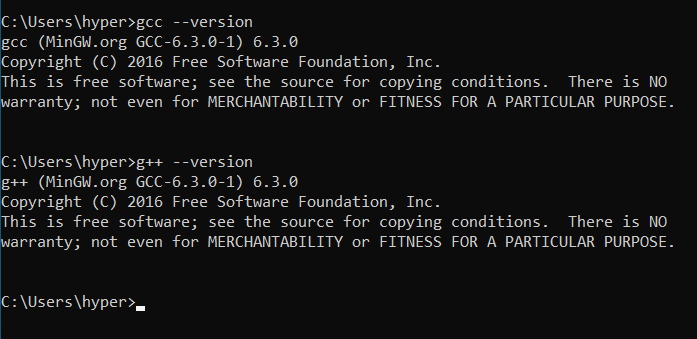
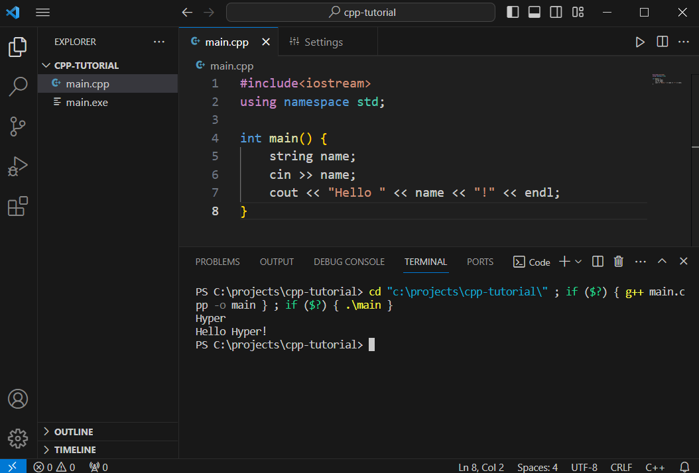

有鑑於 C/C++ 的環境建置真的有夠麻煩，我自己也踩了好幾次坑，因此寫了這篇文章，希望大家都不要被 C 系列荼毒 ><
本文適用於 Windows 環境。
安裝編譯器 (MinGW)
下載 MinGW setup (個人認為 MinGW 載點真的有夠難找，而且各式版本一大堆很混亂)
按 Download Latest Version (綠色按鈕)
下載安裝完成後會自動開啟 MinGW Installation Manager

勾選 mingw32-base 及 mingw32-gcc-g++，按 Mark for Installation

接下來按左上角 Installation > Apply Changes

按 Apply，就會開始安裝編譯器跟標頭檔等等的文件

之後等它安裝完成後就可以把 Installation Manager 關了
加入 PATH 環境變數
PATH 環境變數基本上就是「系統要到哪些路徑底下找執行檔」，不然每次要使用 gcc 都要指定絕對路徑。
非必要，VS Code 本身可以設定編譯器路徑，但還是建議設定一下環境變數比較方便，可以在 terminal 中任何一個目錄下使用 gcc/g++ 指令編譯。
上個步驟的 MinGW 安裝完成後，我們去剛剛安裝的路徑，找到名為bin的資料夾並複製路徑，以我的系統為例就是 C:\MinGW\bin。
在搜尋欄搜索 environment variables，或者如果系統語言是中文就找 環境變數，把他打開。

按 Environment Variables...

接下來到 User variables 那邊選擇 Path，再按 Edit...

要選 System variables 的 Path 也是可以，差別在於前者只作用於目前使用者，而後者則是整個系統的所有使用者共用，也就是日後使用其他帳號就不用重新設定一次。按 New 然後把剛剛 bin 資料夾的路徑貼上去

接下來一直按 OK 儲存更改並把視窗關掉。
打開 terminal (搜尋 cmd 或 powershell) 輸入
gcc --version
g++ --version
如果有出現版本訊息就代表設定好環境變數了！

使用 VS Code
(設定完 PATH 環境變數需重啟 VS Code 才會生效)
創建一個資料夾並拖到 VS Code 圖示上來開啟專案。(或者打開 VS Code，選擇File > Open Folder)
或許會跳提示框，按 Yes, I trust the authors 就好。
安裝 Code Runner 擴充包，可參考使用 VS Code 撰寫 Python 程式的相關設定。
💡Tips: 如果使用C/C++的目的是競程的話，要把 Run In Terminal 打開，才有辦法在 terminal 輸入測資。
按右上角三角形或快捷鍵Ctrl+Alt+N就可以在 terminal 看到執行結果了！
(參考 常用 VS Code 快捷鍵)

C/C++ Extension Pack
C/C++ Extension Pack 是 Microsoft 的擴充包。
Debug 功能對於比較大型的專案十分有用，不過如果是要打競程的話可能用不太到，可以暫時忽略這部分(?
安裝完之後會發現右上角三角形除了 Run Code 之外，還多了 Debug 跟 Run C/C++ File 的選項。
執行之後會產生.vscode資料夾，裡面可能會有c_cpp_properties.json tasks.json launch.json檔案。
c_cpp_properties.json裡可以定義像是編譯器路徑、intellisense(程式代碼完成輔助功能)、C++版本、include path之類的設定；而tasks.json可以設定執行的命令(可以取代 makefile 但不推薦)；launch.json則是用來 Debug 的。
這邊就不細講，剩下的功能交給讀者自行摸索了～